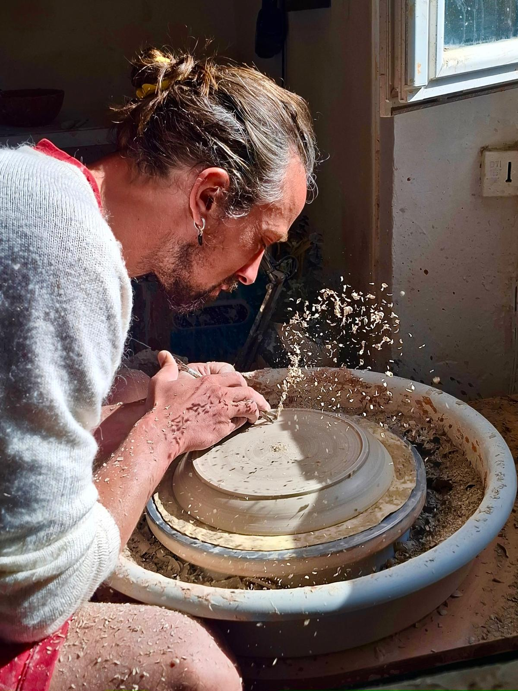

L'Atelier & L'Artisan
A sanctuary of slow design, where raw earth meets deliberate intention.

Antony, Le Céramiste
Antony Terrieux crée des pièces céramiques uniques où la terre devient texture, mouvement et présence. Son univers artistique puise dans les formes organiques, les matières brutes et une esthétique minimaliste profondément contemporaine. Chaque création est façonnée à la main avec une attention particulière portée à l’équilibre, aux sensations et aux détails.
Le Savoir-Faire
Une esthétique organique et contemporaine. Inspiré par la nature, l’architecture et les textures minérales, Antony Terrieux développe un langage artistique épuré, centré sur la matière et l’essentiel. Chaque pièce possède sa propre énergie — une présence silencieuse qui invite à ralentir, toucher et ressentir.

Le toucher

Les outils